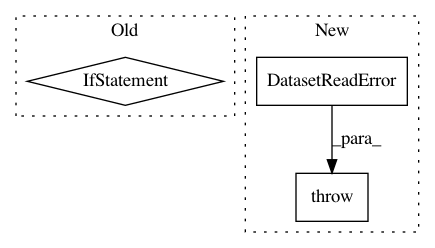

7c408ad993e215227823fc1f7fc64b8737782b5d,lazyflow/operators/ioOperators/opNpyFileReader.py,OpNpyFileReader,setupOutputs,#OpNpyFileReader#,49
Before Change
self._memmapFile = rawNumpyArray._mmap
elif isinstance(rawLoadedNumpyObject, numpy.lib.npyio.NpzFile):
npzContents = rawLoadedNumpyObject.files
if self.InternalPath.value == "":
logger.warning("Falling back to first entry in NPZ file %s", fileName)
self.InternalPath.setValue(npzContents[0])
if self.InternalPath.value not in npzContents:
raise OpNpyFileReader.DatasetReadError(
"Unable to open numpy npz dataset: {fileName}: {internalPath}".format(
fileName=fileName,
After Change
fileName=fileName,
internalPath=self.InternalPath.value))
else:
raise OpNpyFileReader.DatasetReadError(
"InternalPath not given. Unable to open numpy npz dataset: "
"{fileName}".format(
fileName=fileName))
axisorders = { 2 : "yx",
3 : "zyx",
4 : "zyxc",
In pattern: SUPERPATTERN
Frequency: 3
Non-data size: 3
Instances
Project Name: ilastik/ilastik
Commit Name: 7c408ad993e215227823fc1f7fc64b8737782b5d
Time: 2017-03-07
Author: dominik.kutra@gmail.com
File Name: lazyflow/operators/ioOperators/opNpyFileReader.py
Class Name: OpNpyFileReader
Method Name: setupOutputs
Project Name: ilastik/ilastik
Commit Name: 07774ff9f03f8943fca58f871240b4271582347e
Time: 2015-09-15
Author: bergs@janelia.hhmi.org
File Name: lazyflow/operators/ioOperators/opDvidVolume.py
Class Name: OpDvidVolume
Method Name: init_client
Project Name: ilastik/ilastik
Commit Name: 8dba62c7ed2c67fbad25cf0805c74ae24ce468d3
Time: 2017-03-06
Author: dominik.kutra@gmail.com
File Name: lazyflow/operators/ioOperators/opNpyFileReader.py
Class Name: OpNpyFileReader
Method Name: setupOutputs